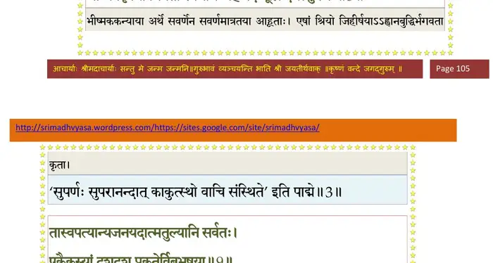
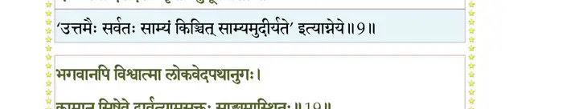
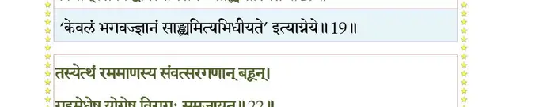
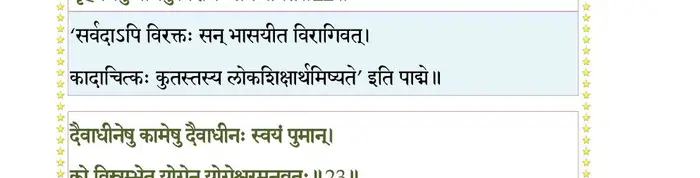
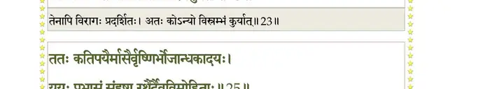
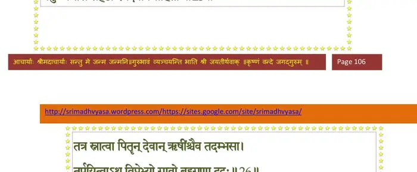
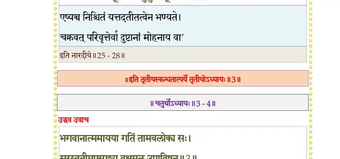

स्कन्ध 3 · अध्याय 3
श्लोक १
उद्धव उवाच–
ततः स आगत्य पुरं स्वपित्रोश्चिकीर्षयाशां बलदेवसंयुतः ।
निपात्य तुङ्गाद् रिपुयूथनाथं हतं व्यकर्षद् व्यसुमोजसोर्व्याम्।। १ ।।
ततः स आगत्य पुरं स्वपित्रोश्चिकीर्षयाशां बलदेवसंयुतः ।
निपात्य तुङ्गाद् रिपुयूथनाथं हतं व्यकर्षद् व्यसुमोजसोर्व्याम्।। १ ।।
श्लोक २
सान्दीपिनेः सकृत् प्रेक्तं ब्रह्माधीत्य सविस्तरम् ।
तस्मै प्रदाद् वरं पुत्रं मृतं पञ्चजनोदरात्।। २ ।।
तस्मै प्रदाद् वरं पुत्रं मृतं पञ्चजनोदरात्।। २ ।।
श्लोक ३
समाहुता भीष्मककन्यया ये श्रियः सवर्णेन जिहीर्षयैषाम् ।
गान्धर्ववृत्त्या मिषतां स्वभागं जह्रे पदं मूधर्ि्न दधत् सुपर्णः।। ३ ।।
गान्धर्ववृत्त्या मिषतां स्वभागं जह्रे पदं मूधर्ि्न दधत् सुपर्णः।। ३ ।।
भागवततात्पर्यनिर्णय

श्लोक ४
ककुद्मतोऽविद्धनसो दमित्वा स्वयंवरे नाग्नजितीमुवाह ।
तान् भग्नमानानभिगृध्यतोऽज्ञान् जघ्नेऽक्षतः शस्त्रभृतश्च शस्त्रैः।। ४ ।।
तान् भग्नमानानभिगृध्यतोऽज्ञान् जघ्नेऽक्षतः शस्त्रभृतश्च शस्त्रैः।। ४ ।।
श्लोक ५
प्रिायं प्रभुर्ग्राम्य इव प्रिायाया विधित्सुरार्च्छद् द्युतरुं यदर्थे ।
वज्र्याद्रवत् तं सगणो रुषाऽन्धः स्वार्थे पुरा तैर्यमयाचतानतः।।५।।
वज्र्याद्रवत् तं सगणो रुषाऽन्धः स्वार्थे पुरा तैर्यमयाचतानतः।।५।।
श्लोक ६
सुतं मृधे स्वं(खं) वपुषा ग्रसन्तं दृष्ट्वा सुनाभोन्मथितं धरित्र्याः ।
आमन्त्रितस्तत्तनयाय शेषं दत्वा तदन्तःपुरमाविवेश।। ६ ।।
आमन्त्रितस्तत्तनयाय शेषं दत्वा तदन्तःपुरमाविवेश।। ६ ।।
श्लोक ७
तत्राहृतास्ता नरदेवकन्याः कुजेन दृष्ट्वा हरिमार्तबन्धुम् ।
उत्थाय सद्यो जगृहुः प्रहर्षव्रीडानुरागप्रहितावलोकैः।। ७ ।।
उत्थाय सद्यो जगृहुः प्रहर्षव्रीडानुरागप्रहितावलोकैः।। ७ ।।
श्लोक ८
आसां मुहूर्त एकस्मिन् नानागारेषु योषिताम् ।
सविधिं जगृहे पाणीन् पुरुरूपः स्वमायया।। ८ ।।
सविधिं जगृहे पाणीन् पुरुरूपः स्वमायया।। ८ ।।
श्लोक ९
तास्वपत्यान्यजनयदात्मतुल्यानि सर्वतः ।
एकैकस्यां दश दश प्रकृतेर्विबुभूषया।। ९ ।।
एकैकस्यां दश दश प्रकृतेर्विबुभूषया।। ९ ।।
भागवततात्पर्यनिर्णय

श्लोक १०
कालमागधशाल्वादीननीकै रुन्धतः पुरम् ।
अजीघनत् स्वयं दिव्यं स्वपुंसां तेज आदिशन्।। १० ।।
अजीघनत् स्वयं दिव्यं स्वपुंसां तेज आदिशन्।। १० ।।
श्लोक ११
शंबरं विविदं बाणं मुरं बल्वलमेव च ।
अन्यांश्च दन्तवक्त्रादीनवधीत् कांश्च घातयन्।। ११ ।।
अन्यांश्च दन्तवक्त्रादीनवधीत् कांश्च घातयन्।। ११ ।।
श्लोक १२
अथ ते भ्रातृपुत्राणां पक्षयोः पतितान् नृपान् ।
चचाल भूः कुरुक्षेत्रं येषामापततां बलैः।। १२ ।।
चचाल भूः कुरुक्षेत्रं येषामापततां बलैः।। १२ ।।
श्लोक १३
सकर्णदुःशासनसौबलानां कुमन्त्रपाकेन हतश्रियायुषम् ।
सुयोधनं सानुचरं शयानं भग्नोरुमुर्व्यां स ननन्द पश्यन्।। १३ ।।
सुयोधनं सानुचरं शयानं भग्नोरुमुर्व्यां स ननन्द पश्यन्।। १३ ।।
श्लोक १४
कियान् भुवोऽयं क्षपितोरुभारो यद् द्रोणभीष्मार्जुनभीमशल्यैः ।
अष्टादशाक्षौहिणिको मदंशैरास्ते बलं दुर्विषहं यदूनाम्।। १४ ।।
अष्टादशाक्षौहिणिको मदंशैरास्ते बलं दुर्विषहं यदूनाम्।। १४ ।।
श्लोक १५
मिथो यदैषां भविता विवादो माध्व्या मदात् ताम्रविलोचनानाम् ।
नैषां वधोपाय इयानतोऽन्यो मय्युद्यतेऽन्तर्दधते स्वयं स्म।। १५ ।।
नैषां वधोपाय इयानतोऽन्यो मय्युद्यतेऽन्तर्दधते स्वयं स्म।। १५ ।।
श्लोक १६
एवं सञ्चिन्त्य भगवान् स्वाराज्ये स्थाप्य धर्मजम् ।
नन्दयामास सुहृदः साधूनां वर्त्म दर्शयन्।। १६ ।।
नन्दयामास सुहृदः साधूनां वर्त्म दर्शयन्।। १६ ।।
श्लोक १७
उत्तरायां धृतः पूरोर्वंशः साध्वभिमन्युना ।
स वै द्रौण्यस्त्रसंछिन्नः पुनर्भगवता धृतः।। १७ ।।
स वै द्रौण्यस्त्रसंछिन्नः पुनर्भगवता धृतः।। १७ ।।
श्लोक १८
अयाजयद् धर्मसुतमश्वमेधैस्त्रिभिर्विभुः ।
सोऽपि क्ष्मामनुजै रक्षन् रेमे कृष्णमनुव्रतः।। १८ ।।
सोऽपि क्ष्मामनुजै रक्षन् रेमे कृष्णमनुव्रतः।। १८ ।।
श्लोक १९
भगवानपि विश्वात्मा लोकवेदपथानुगः ।
कामान् सिषेवे द्वार्वत्यामसक्तः साङ्ख्यमास्थितः।। १९ ।।
कामान् सिषेवे द्वार्वत्यामसक्तः साङ्ख्यमास्थितः।। १९ ।।
भागवततात्पर्यनिर्णय

श्लोक २०
स्निग्धस्मितावलोकेन वाचा पीयूषकल्पया ।
चरित्रेणानवद्येन श्रीनिकेतेन चात्मना।। २० ।।
चरित्रेणानवद्येन श्रीनिकेतेन चात्मना।। २० ।।
श्लोक २१
इमं लोकममूंश्चैव रमयन् सुतरां यदून् ।
रेमे क्षणदया दत्तक्षणः स्त्रीक्षणसौहृदः।। २१ ।।
रेमे क्षणदया दत्तक्षणः स्त्रीक्षणसौहृदः।। २१ ।।
श्लोक २२
तस्येत्थं रममाणस्य संवत्सरगणान् बहून् ।
गृहमेधेषु योगेषु विरागः समजायत।। २२ ।।
गृहमेधेषु योगेषु विरागः समजायत।। २२ ।।
भागवततात्पर्यनिर्णय

श्लोक २३
दैवाधीनेषु कामेषु दैवाधीनः स्वयं पुमान् ।
को विश्रंभेत योगेन योगेश्वरमनुव्रतः।। २३ ।।
को विश्रंभेत योगेन योगेश्वरमनुव्रतः।। २३ ।।
भागवततात्पर्यनिर्णय

श्लोक २४
पुर्यां कदाचित् क्रीडद्भिर्यदुभोजकुमारकैः ।
कोपिता मुनयः शेपुर्भगवन्मतकोविदाः।। २४ ।।
कोपिता मुनयः शेपुर्भगवन्मतकोविदाः।। २४ ।।
श्लोक २५
ततः कतिपयैर्मासैर्वृष्णिभोजान्धकादयः ।
ययुः प्रभासं संहृष्टा रथैदेवविमोहिताः।। २५ ।।
ययुः प्रभासं संहृष्टा रथैदेवविमोहिताः।। २५ ।।
भागवततात्पर्यनिर्णय

श्लोक २६
तत्र स्नात्वा पितॄन् देवान् ऋषींश्चैव तदंभसा ।
तर्पयित्वाऽथ विप्रोभ्यो गावो बहुगुणा ददुः।। २६ ।।
तर्पयित्वाऽथ विप्रोभ्यो गावो बहुगुणा ददुः।। २६ ।।
भागवततात्पर्यनिर्णय
श्लोक २७
हिरण्यं रजतं शय्यां वासांस्यजिनकम्बलान् ।
हयान् रथानिभान् कन्यां धरां वृत्तिकरीमपि।। २७ ।।
हयान् रथानिभान् कन्यां धरां वृत्तिकरीमपि।। २७ ।।
भागवततात्पर्यनिर्णय
श्लोक २८
अन्नं चोरुरसं तेभ्यो दत्वा भगवदर्पणम् ।
गोविप्रर्थासवः शूराः प्रणेमुर्भुवि मूर्धभिः।। २८ ।।
गोविप्रर्थासवः शूराः प्रणेमुर्भुवि मूर्धभिः।। २८ ।।
भागवततात्पर्यनिर्णय

।। इति श्रीमद्भागवते तृतीयस्कन्धे तृतीयोऽध्यायः ।।